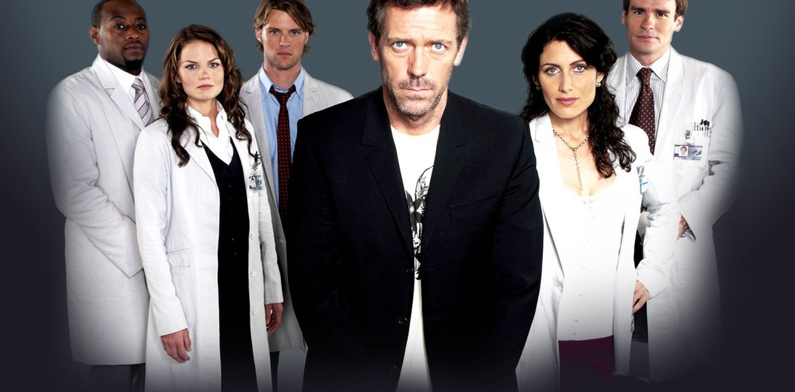

Two and a Half Men (conocida como Dos hombres y medio en español) es una comedia de situación estadounidense, protagonizada hasta la octava temporada por Charlie Sheen, Jon Cryer y Angus T. Jones, y en las últimas cuatro temporadas por Cryer, Ashton Kutcher y Angus T. Jones.
 House:
House:
House M. D. (House en España y Gregory House: Diagnóstico Médico, durante las primeras temporadas en Hispanoamérica) es una serie de televisión estadounidense estrenada en 2004 por la cadena FOX y finalizada en 2012. Fue creada por David Shore, quien además es productor ejecutivo junto a otros como Paul Attanasio, Katie Jacobs o Bryan Singer.
